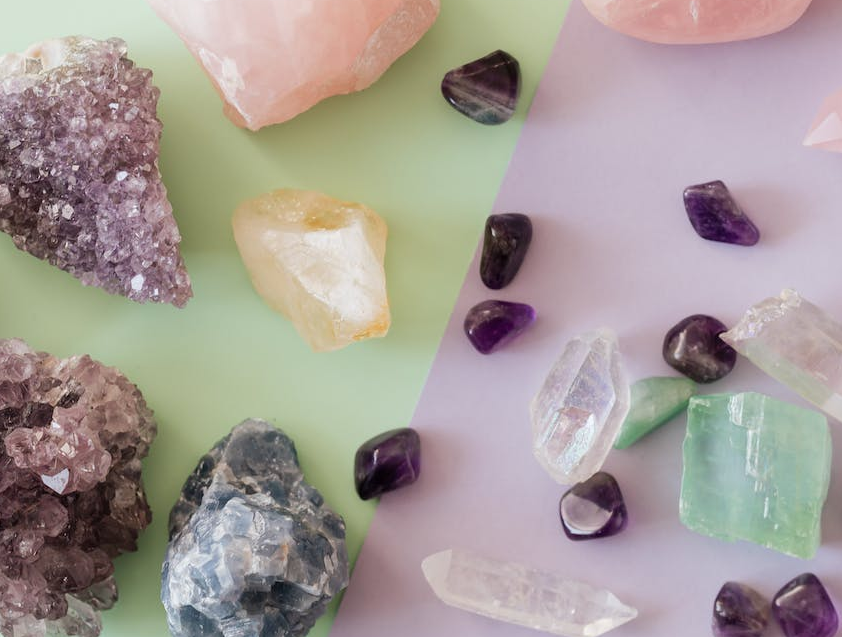

ELIGE EL CRISTAL CORRECTO PARA TI
PASOS CLAVES PARA AYUDARTE
- 1. Investigación: Comienza por aprender sobre las propiedades de diferentes cristales. Cada cristal tiene características y beneficios únicos. Por ejemplo, el cuarzo rosa se asocia con el amor y las relaciones, mientras que el amatista se utiliza para la protección y la claridad mental.
- 2. Conexión Personal: Confía en tu intuición. Cuando explores una tienda de cristales, tómate el tiempo para sostener y sentir los cristales. A menudo, sentirás una conexión especial con uno en particular.
- 3. Identifica tus Necesidades: Considera tus objetivos y necesidades personales. ¿Estás buscando aliviar el estrés, mejorar tu concentración o fortalecer tus relaciones personales? Elige un cristal que se alinee con tus metas.
- 4. Limpieza y Carga: Una vez que hayas seleccionado tu cristal, es importante limpiarlo y cargarlo energéticamente. Puedes hacerlo mediante métodos como enjuagar con agua, enterrar en tierra o exponer al sol o la luna.
- 5. Integración: Incorpora tu cristal en tu vida diaria. Puedes llevarlo contigo como joyería, colocarlo en tu espacio de meditación o simplemente sostenerlo durante la meditación.
